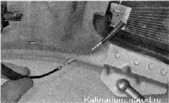
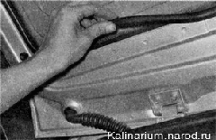

Заднее стекло заменаЗаднее стекло автомобиля приклеено к рамке двери багажного отделения. Стекло можно заменить, не снимая дверь с автомобиля. Для выполнения работы потребуется помощник. Последовательность выполнения 1. Снимаем обивку двери. 2. Отсоединяем наконечники проводов от выводов нагревательного элемента заднего стекла. 3. Снимаем дополнительный фонарь сигнала торможения. 4. Снимаем облицовку рамки двери. Перед приклеиванием стекла необходимо установить облицовку на дверь. 5. Замену стекла выполняем аналогично замене ветрового стекла. 6. После полимеризации клея-герметика подсоединяем провода к нагревательному элементу, приклеиваем сигнал торможения и устанавливаем обивку двери. |